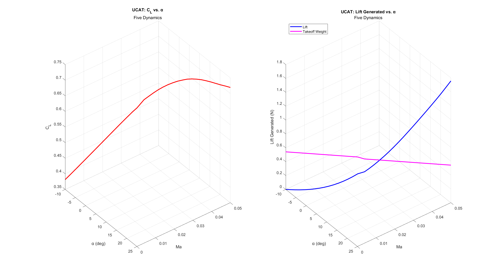

Many of the skills I've gained, including SolidWorks, Siemens NX, Autodesk Inventor Professional, Ansys Fluent,
MATLAB, Simulink, XFLR5, Python, C, and Aras Innovator were acquired through coursework, but were also applied and honed
during projects I've worked on.
Below is a list of the most significant projects I have been apart of:
While serving as the Vice President of Engineering in Five Dynamics, I worked as the lead designer for the Unmanned Controls/Avionics Test-Bed, or "UCAT" for short starting in the 2025 Spring semester.
The intent of the project is to provide a simple flying vehicle for avionics and control systems to be tested on before these systems are implemented in the club's larger rocket projects.
The current iteration, Zephyrus Mk. 1 Version 3, is only intended to be used for testing the range of avionic communication systems and only utilizes differential thrust to turn the aircraft.
In the future, i.e. Mk. 2 and Mk. 3, the aircraft will be outfitted with ailerons, elevators, and other control surfaces in order to properly test
angle adjusting measures through flap deflection which will be crucial for controlling the fins on our club's rocket.
Zephyrus Mk. 1 Version 3 is designed with a NACA 4418 wing cross-section that is tapered at a ratio of 75% and held at a dihedral angle of 15° with 0.75-inch tall winglets on each end of its 8-inch wingspan.
It has a takeoff mass of around 55.19 grams and is projected through MATLAB calculations to produce a maximum lift of at least 1.14 N prior to stall.

The aircraft was modeled entirely in Autodesk Inventor Professional, where finite element analysis was leveraged on the top-level assembly to quantify stress and strain in flight conditions and due to gravity.
XFLR5, which uses the XFOIL library, was used to create the geometry of the NACA 4418 airfoil shape. It also allowed me to export coefficient of lift vs. angle of attack data,
which was later used in MATLAB to estimate the coefficient of lift for the finite wing sections of the plane. The profile of the wings underwent an iterative process which involved
testing different wingspan and chord length configurations in MATLAB to maximize aspect ratio (thus increasing maximum coefficient of lift) while also keeping takeoff mass low.
Upon finding optimal wing geometry configurations, the wings were adjusted in Autodesk Inventor using parameterized design which allowed me to quickly change wingspan or chord length
without having to manually alter any sketches or geometric features.
One benefit to using MATLAB to analyze this aircraft's theoretical performance is the ability to assess crucial takeoff parameters. A three-dimensional graph can tell us the hypothetical
angle of attack and speed that the aircraft needs to be going in order to take off based on the intersection of the calculated takeoff weight and the lift generated vs. angle of attack curve.
This is especially important when considering that this aircraft has no landing gear; it is supposed to be tossed at a certain angle by a human as its method of takeoff. With these MATLAB visualizations,
we can roughly estimate how much force/inclination is needed to toss the aircraft for a successful takeoff.
As part of Purdue University's Introduction to Aerospace Design course, (course code "AAE 25100") me and a group of three other students
were tasked with designing a Mars sample retrieval mission involving selecting a viable launch vehicle and launch date
while also calculating important astrodynamic mission parameters such as ΔV, mission duration, and stage masses.
During this project, I was largely in charge of writing all of these calculations in MATLAB and then communicating their mathematical basis in our
72-page report.
Me and my teammates' efforts won us the
Northrop Grumman Space Award in 2024
for having the most clearly communicated rocket design among all students in the Introduction to Aerospace Design course.
One key mission design choice that was unique to our solution, as highlighted by Northrop fellow Dave McGrath,
was our decision to entirely shed our Mars lander's entry, descent, and landing (EDL) gear upon ascending from the surface of Mars. This decision originated from the struggle to find
a viable rocket engine to fit within our Mars ascent vehicle that would provide enough ΔV to ascend back to the orbiting vehicle. By shedding the EDL gear, we effectively
reduced the weight of the Mars ascent vehicle which relaxed our criteria for possible engines to use in it.